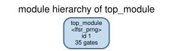
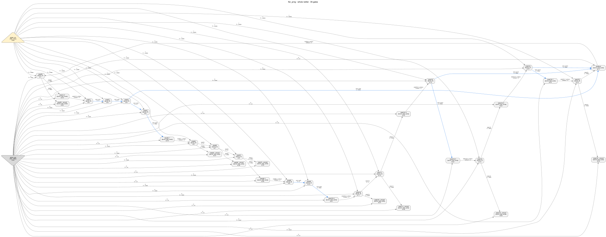
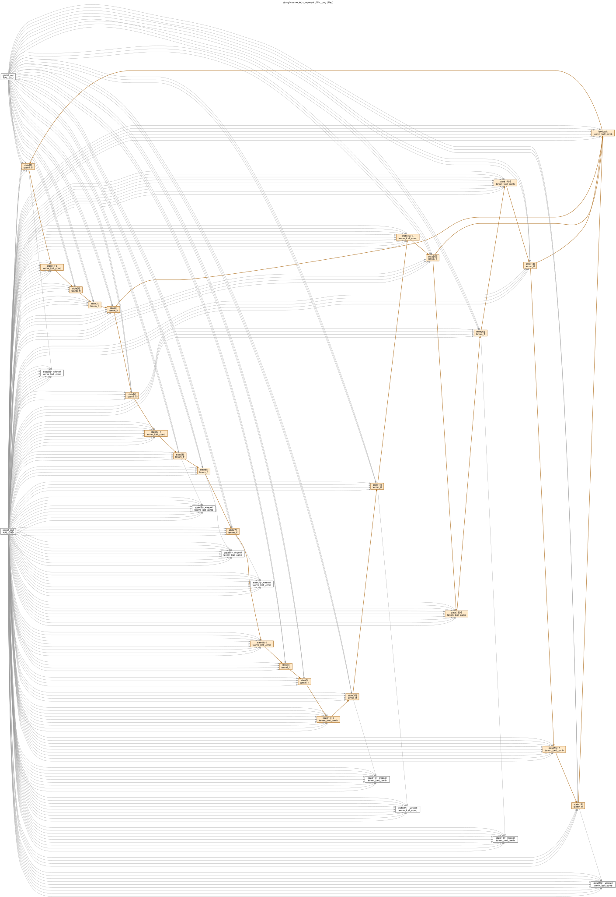
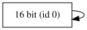
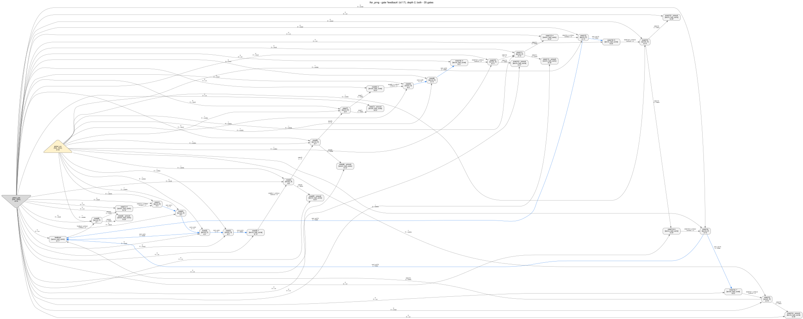
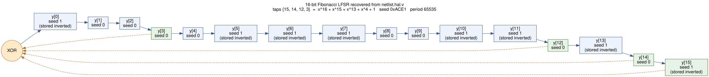

A 16-bit Fibonacci LFSR is synthesized with Quartus Prime Pro, exported as a gate-level netlist, and then taken apart again with HAL until the feedback polynomial, the seed and the reset behaviour fall out. Every command, every picture and every number on this page came from an actual run.
A linear-feedback shift register is the cheapest pseudo-random generator in digital design: a shift register plus one XOR. Every clock, the bits move one place up; the bit that falls off the end is thrown away and a new bit — the XOR of a few chosen positions, the taps — is pushed in at the bottom. Choose the taps so that the corresponding polynomial over GF(2) is primitive and the register walks through all 2n−1 non-zero states before it repeats.
The design under test uses the classic 16-bit polynomial x16+x15+x13+x4+1 — taps 16, 15, 13 and 4 in the usual 1-based notation, i.e. register bits 15, 14, 12 and 3.
module lfsr_prng (
input wire clk, // single clock domain
input wire rst_n, // asynchronous, active low: load the seed
input wire en, // advance the generator when high
output wire [15:0] rand_out, // the full LFSR state
output wire bit_out // the serial pseudo-random bit stream
);
// The seed only has to be non-zero; 16'hACE1 is the traditional one.
localparam [15:0] SEED = 16'hACE1;
reg [15:0] state;
// Single XOR of the four taps -- one 4-input function, one ALM after
// synthesis. This is the only combinational logic in the design.
wire feedback = state[15] ^ state[14] ^ state[12] ^ state[3];
always @(posedge clk or negedge rst_n) begin
if (!rst_n)
state <= SEED;
else if (en)
state <= {state[14:0], feedback};
end
assign rand_out = state;
assign bit_out = state[15];
endmodulespec.md states the intent in words: single clock, maximal length 65535, the all-zero state is the fixed point the seed exists to avoid, and — stated plainly — an LFSR is not a cryptographic PRNG, because its whole state is recoverable from 16 consecutive output bits. That is the property this walkthrough is, in a sense, a demonstration of.
The flow is the one tools/hal_agilex documents and its fixtures were made with, so
this walkthrough's export is directly comparable to them: same device, same Quartus version,
same two commands, synthesis only (no fitting, so no placement noise in the netlist).
# examples/agilex3_walkthroughs/05_lfsr_prng/quartus/lfsr_prng.qsf
set_global_assignment -name FAMILY "Agilex 3"
set_global_assignment -name DEVICE A3CW135BM16AE6S
set_global_assignment -name TOP_LEVEL_ENTITY lfsr_prng
set_global_assignment -name VERILOG_FILE ../design.v
set_global_assignment -name PROJECT_OUTPUT_DIRECTORY output_filescd examples/agilex3_walkthroughs/05_lfsr_prng/quartus
# 1. synthesize
C:/altera_pro/26.1/quartus/bin64/quartus_syn.exe lfsr_prng -c lfsr_prng
# 2. write the post-synthesis Verilog netlist
C:/altera_pro/26.1/quartus/bin64/quartus_eda.exe --simulation --format=verilog \
--tool=questasim --output_directory=simulation lfsr_prng -c lfsr_prng
cp simulation/lfsr_prng.vo ../lfsr_prng.voWhat Quartus reports (artifacts/quartus_resource_usage.txt):
; Estimate of Logic utilization (ALMs needed) ; 10 ;
; Combinational ALUT usage for logic ; 17 ;
; -- 4 input functions ; 1 ;
; -- <=3 input functions ; 16 ;
; Dedicated logic registers ; 16 ;
; I/O pins ; 20 ;
; Maximum fan-out node ; clk ;The exported lfsr_prng.vo is 772 lines. The only wide cell is this one — and Quartus helpfully writes the equation it implemented next to it:
tennm_lcell_comb #(
.extended_lut ("off"),
.lut_mask (64'h6996699669966996),
.shared_arith ("off"))
feedback(
// Equation(s):
// \feedback~combout = !state[3] ^ (!state[12] ^ (!state[14] ^ (!state[15])))
.dataa(~state[3]),
.datab(~state[12]),
.datac(~state[14]),
.datad(~state[15]),
.datae(gnd), .dataf(gnd), .datag(gnd), .datah(gnd),
.cin(gnd), .sharein(gnd),
.combout(\feedback~combout ),
.sumout(), .cout(), .shareout());and every register looks like this:
tennm_ff #(.is_wysiwyg ("true"), .power_up ("dont_care"))
\state[0] (
.clk(clk), .d(\feedback~combout ), .asdata(vcc),
.clrn(rst_n), .aload(gnd), .sclr(gnd), .sload(gnd),
.ena(en), .sclr1(gnd),
.devclrn(devclrn), .devpor(devpor),
.q(state[0]));HAL's Verilog parser is a structural netlist reader and rejects three things the Quartus writer
emits: tri1 nets, inversions written on instance ports
(.dataa(~state[3])), and unconnected pins. tools/hal_agilex import
rewrites exactly those three, and refuses anything it cannot rewrite exactly:
python tools/hal_agilex import \
examples/agilex3_walkthroughs/05_lfsr_prng/lfsr_prng.vo \
-o examples/agilex3_walkthroughs/05_lfsr_prng/netlist.hal.vThe port inversions are absorbed into the LUT mask: inverting input i permutes the mask bits j → j XOR (1<<i), which is an exact relabelling, not an approximation. For the XOR cell above, all four data inputs are inverted, and a 4-input XOR mask is invariant under that permutation, so the mask survives unchanged:
tennm_lcell_comb #(.extended_lut ("off"), .lut_mask (64'h6996699669966996), .shared_arith ("off"))
feedback (.combout (\feedback~combout ), .dataa (state[3]), .datab (state[12]),
.datac (state[14]), .datad (state[15]), ...);The result, netlist.hal.v, is 95 lines and is what everything below loads. Both files are committed; you do not need Quartus to follow the walk.
Two commands, no analysis yet. First: is this thing even interpretable?
python tools/hal_agilex inventory examples/agilex3_walkthroughs/05_lfsr_prng/lfsr_prng.vo"status": "proven_under_assumptions",
"summary": "All 33 instances are tennm_ff or tennm_lcell_comb, each in a configuration
this package models and has validated against the vendor export.",
"histogram": { "tennm_ff": 16, "tennm_lcell_comb": 17 }tennm_ram_block: unsupported, the honest next move would be to go get semantics for
that block — not to run analyses that quietly treat it as a black box. The AGILEX_TENNM
library plus hal_agilex gives every ALM here a real Boolean function; a cell outside
the validated coverage gets no function rather than a plausible one.
Nothing from here to section 5 reads design.v. Every script in this
walkthrough loads netlist.hal.v the same way: HAL parses the
file against AGILEX_TENNM.hgl, and then
hal_agilex.hal_adapter.elaborate attaches each ALM's Boolean function from its
lut_mask and mode, refusing any cell it cannot model. Both
check.py and scc.py print what they loaded
before they do anything else:
HAL_BASE_PATH=/work/build PYTHONPATH=/work/build/lib \
python3 examples/agilex3_walkthroughs/05_lfsr_prng/check.pynetlist: /work/examples/agilex3_walkthroughs/05_lfsr_prng/netlist.hal.v
gate library: /work/plugins/gate_libraries/definitions/AGILEX_TENNM.hgl
elaborated 17 ALM cells, 16 flip-flops checked, 0 refused
[ok] hal_agilex refused no gate -- []
[ok] netlist has 16 flip-flops -- found 16
[ok] netlist has 17 ALM cells -- found 17
[ok] no primitive outside the modelled coverage -- HAL_GND, HAL_VCC, tennm_ff, tennm_lcell_comb
[... the remaining 19 checks are quoted in full in step 4 ...]Sixteen flip-flops is a hard upper bound on the state: whatever this design is, it cannot
hide more than 16 bits. Seventeen combinational cells for sixteen registers is a shallow,
register-dominated design — a datapath, not an arithmetic unit. And 0 refused is
the line that matters most: every combinational cell in this netlist has a real Boolean
function attached, so the analyses below are reading logic rather than guessing at it.
.vo; HAL's own
gate count is 35 — the module tree below is labelled
35 gates, and the SCC script in step 2 reports 35 vertices. The
two extra are HAL_GND and HAL_VCC, which do not exist on the
device: HAL's Verilog parser needs a gate to materialise the
1'b0/1'b1 literals the export uses, so
AGILEX_TENNM.hgl declares two with a deliberately un-vendor-like prefix. When
you count gates, two of them are bookkeeping.
python tools/hal_viz module_tree examples/agilex3_walkthroughs/05_lfsr_prng/netlist.hal.v \
-g plugins/gate_libraries/definitions/AGILEX_TENNM.hgl \
-o examples/agilex3_walkthroughs/05_lfsr_prng/images/module_tree.svg
python tools/hal_viz netlist_graph examples/agilex3_walkthroughs/05_lfsr_prng/netlist.hal.v \
-g plugins/gate_libraries/definitions/AGILEX_TENNM.hgl --pin-labels \
-o examples/agilex3_walkthroughs/05_lfsr_prng/images/netlist_graph.svg
HAL_GND and
HAL_VCC. At this size you can see the shape with your eyes: a long chain of
flip-flops, a few one-input cells sprinkled along it, one cell with four inputs, and a set of
one-input cells hanging off the side towards the outputs.What you can see here: the number of state bits (16), that they are all on one
clock, that the design is a chain and not a tree, that exactly one combinational cell is wide, and
that there is no arithmetic (no carry chain — those show up as cin/cout
edges between neighbouring ALMs, as in the agilex3_counter_adder fixture).
What you cannot see: that this is a random number generator; which bit is bit 0; what the reset value is; that the four inputs of the wide cell are taps of a polynomial; whether the sequence is maximal-length or degenerate. Those are the next four sections.
state[3], feedback) because Quartus
writes them into the netlist. A netlist you get in the field may have been through a name
stripper, and then feedback~combout is n1749. So the walk below —
and check.py, which reproduces it — deliberately uses no name for any
decision. Every conclusion rests on connectivity and Boolean functions only. The names appear in
the printouts, and nowhere in the reasoning.
Everything below is in run_analysis.sh in the order shown, and the conclusions are re-derived and asserted by check.py.
Command
python tools/hal_cdc discover examples/agilex3_walkthroughs/05_lfsr_prng/netlist.hal.v \
--gate-library plugins/gate_libraries/definitions/AGILEX_TENNM.hgl \
-o examples/agilex3_walkthroughs/05_lfsr_prng/artifacts/cdc.declarations.json
python tools/hal_cdc audit ... --declarations artifacts/cdc.declarations.json \
-o artifacts/cdc.findings.json --dot artifacts/cdc.domains.dotdiscover assumes nothing: it writes a skeleton of the nets that look
like clocks and resets and leaves you to confirm them
(artifacts/cdc.declarations.json, the
top-level description string elided):
{
"version": 1,
"description": "[... how to edit this skeleton ...]",
"clocks": [
{
"name": "clk",
"net": "clk",
"description": "drives 16 clock pin(s)"
}
],
"resets": [
{
"name": "rst_n",
"net": "rst_n",
"description": "drives 16 reset/set pin(s); set 'synchronous_to' if this reset is already synchronous to a clock"
}
]
}and audit screens the netlist against that declaration:
domains : clk
registers : 16 (0 with an unknown domain)
crossings : 0
unknown inputs : 16
reset targets : 16
reset_synchronizer_stage 16
NOTE: structural screening only -- no timing, no metastability sign-off.
findings: examples/agilex3_walkthroughs/05_lfsr_prng/artifacts/cdc.findings.json
domain graph: examples/agilex3_walkthroughs/05_lfsr_prng/artifacts/cdc.domains.dotOne domain, sixteen registers in it, zero crossings. The last two counters are worth
reading rather than skipping. reset targets: 16 with all sixteen classified
reset_synchronizer_stage is this tool's label for "a flip-flop in the
clk domain that is asynchronously cleared by rst_n" — which is all
sixteen of them, and exactly what the .vo showed. unknown inputs: 16
is the enable: the declaration says nothing about en, so the sixteen
ena pins are fed by a source whose domain is undeclared, and the audit files that
as cdc/unknown-source/000 with status unknown —
"neither safe nor unsafe: declare the missing clock or input domain" — rather than
quietly assuming it is fine.
Reasoning. Before anything else you want to know how many machines you are
looking at. Sixteen flip-flops on one clock net, one shared enable and one shared asynchronous
clear means one synchronous element, not several interacting ones. Had there been two
clocks, the very first job would have been to split the netlist by domain and to treat everything
crossing between them as a synchronizer until proven otherwise. Also note what the clear does:
these flip-flops have clrn driven by a primary input and aload,
sload, sclr tied to ground — the only reset available to them clears to
zero. Remember that; it is the lever that gets us the seed in step 6.
Command
python3 examples/agilex3_walkthroughs/05_lfsr_prng/scc.pyartifacts/scc.txt, with the plugin-loading chatter stripped:
netlist graph: 35 vertices, 298 edges
weakly connected components: [35]
strongly connected components of size >= 2: [25]
component 0: 25 gates {'tennm_ff': 16, 'tennm_lcell_comb': 9}
1 state[0] tennm_ff
2 state[1] tennm_ff
3 state[2] tennm_ff
4 state[3] tennm_ff
5 state[4] tennm_ff
6 state[5] tennm_ff
7 state[6] tennm_ff
8 state[7] tennm_ff
9 state[8] tennm_ff
10 state[9] tennm_ff
11 state[10] tennm_ff
12 state[11] tennm_ff
13 state[12] tennm_ff
14 state[13] tennm_ff
15 state[14] tennm_ff
16 state[15] tennm_ff
17 feedback tennm_lcell_comb
18 state[1]~0 tennm_lcell_comb
19 state[5]~1 tennm_lcell_comb
20 state[8]~2 tennm_lcell_comb
21 state[10]~3 tennm_lcell_comb
22 state[12]~4 tennm_lcell_comb
23 state[13]~5 tennm_lcell_comb
24 state[14]~6 tennm_lcell_comb
25 state[15]~7 tennm_lcell_comb
wrote /work/examples/agilex3_walkthroughs/05_lfsr_prng/artifacts/scc.dot
gates inside the largest SCC: 25 of 35One weakly connected component (nothing in this netlist is detached) and exactly one
non-trivial strongly connected component: 25 of the 35 gates, containing every flip-flop, the
one wide cell, and eight of the seventeen small ones. The ten gates outside it are the other
eight small cells plus HAL_GND and HAL_VCC. Keep that split in mind:
eight small cells inside the loop, eight outside it, and step 6 is about why there are
sixteen.

Reasoning. This is the question that separates the two big families of shift
structures. A delay line, a pipeline or a synchronizer chain is a path: no cycle. A
counter, an LFSR, a CRC or an FSM is a loop: the state feeds itself. The
graph_algorithm plugin (igraph) answers it directly, and the answer here is one
component containing every flip-flop and the wide cell — one closed loop of state, with a handful of
cells outside the loop that only observe it.
What it does not tell you is what the loop computes. Counters, LFSRs and FSMs all look like this. To separate them you have to read the functions.
Command
python tools/hal_viz dataflow examples/agilex3_walkthroughs/05_lfsr_prng/netlist.hal.v \
-g plugins/gate_libraries/definitions/AGILEX_TENNM.hgl \
-o examples/agilex3_walkthroughs/05_lfsr_prng/images/dataflowState:
ID:0, Size:16, CLK: {40}, EN: {42}, R: {41}, S: {}
Successors: {0}
Predecessors: {0}
state[0], type: tennm_ff, id: 1, RS:
state[1], type: tennm_ff, id: 2, RS:
state[2], type: tennm_ff, id: 3, RS:
state[3], type: tennm_ff, id: 4, RS:
state[4], type: tennm_ff, id: 5, RS:
state[5], type: tennm_ff, id: 6, RS:
state[6], type: tennm_ff, id: 7, RS:
state[7], type: tennm_ff, id: 8, RS:
state[8], type: tennm_ff, id: 9, RS:
state[9], type: tennm_ff, id: 10, RS:
state[10], type: tennm_ff, id: 11, RS:
state[11], type: tennm_ff, id: 12, RS:
state[12], type: tennm_ff, id: 13, RS:
state[13], type: tennm_ff, id: 14, RS:
state[14], type: tennm_ff, id: 15, RS:
state[15], type: tennm_ff, id: 16, RS: 
One group, sixteen bits, one shared clock net (id 40), one shared enable (42), one shared reset (41), and it is its own successor and predecessor. That is correct, and it is almost everything DANA can say: it recovers the width of the register and nothing about the order of the bits inside it or what the feedback computes. Compare the counter/PWM walkthroughs, where two registers with different enables split cleanly into two groups — that is DANA earning its keep. Here the answer is a single word-level register, and the work still has to be done bit by bit.
Reasoning. DANA (plugins/dataflow_analysis) groups flip-flops that
plausibly belong to the same word-level register, using control signals and the shape of the data
flow. On a big unknown design that is how you find "there is a 32-bit register here and a 128-bit
one there" before you understand any of it. Its output is a heuristic, and on this design
the heuristic has almost nothing to work with: every flip-flop shares the same clock, enable and
reset, so control-signal grouping cannot subdivide them, and the shift structure means each one has
a different data neighbourhood.
This is the step that actually solves the design, and it is worth understanding as a technique
rather than as a command. Cut the netlist at the flip-flops: what is left is a purely combinational
block whose inputs are the 16 stored bits (plus the primary inputs) and whose outputs are the 16
d pins. Evaluate that block and you have the state-transition function.
HAL gives you the pieces: each ALM carries a Boolean function (attached by
hal_agilex.hal_adapter.elaborate, since an ALM's semantics depend on
lut_mask and mode and so cannot live in the gate library), and
BooleanFunction.evaluate evaluates it. The loop in check.py is thirty-odd lines:
set the flip-flop outputs, propagate through the ALMs until nothing changes, read the
d pins.
values = {} # net id -> 0/1, seeded with the flip-flop outputs
for gate, inputs, outputs in combinational_cells:
assignment = {pin: ONE if values[net] else ZERO for pin, net in inputs.items()}
for pin, (net, function) in outputs.items():
values[net] = function.evaluate(assignment)Sixteen unknown functions of sixteen variables is 216 evaluations each if you brute force it. You do not have to: guess that they are affine over GF(2) — that is, of the form c ⊕ xi ⊕ xj ⊕ … — and a function of 16 variables then needs only 17 probes: the all-zero vector for the constant, and one unit vector per variable. Spot-check the guess on random vectors afterwards. Linearity is not a lucky guess here: it is the defining property of an L-FSR, and if the probing had failed the spot-check you would have learned something equally important (that the feedback is non-linear, i.e. an NLFSR or an FSM).
Command
HAL_BASE_PATH=/work/build PYTHONPATH=/work/build/lib \
python3 examples/agilex3_walkthroughs/05_lfsr_prng/check.py --write-artifactsnetlist: /work/examples/agilex3_walkthroughs/05_lfsr_prng/netlist.hal.v
gate library: /work/plugins/gate_libraries/definitions/AGILEX_TENNM.hgl
elaborated 17 ALM cells, 16 flip-flops checked, 0 refused
[ok] hal_agilex refused no gate -- []
[ok] netlist has 16 flip-flops -- found 16
[ok] netlist has 17 ALM cells -- found 17
[ok] no primitive outside the modelled coverage -- HAL_GND, HAL_VCC, tennm_ff, tennm_lcell_comb
[ok] all flip-flops share one clock net
[ok] all flip-flops share one enable net
[ok] all flip-flops share one asynchronous clear net
[ok] the asynchronous clear is a primary input -- rst_n
[ok] every next-state function is affine over GF(2) (32 random probes each)
[ok] exactly one flip-flop has a wide next-state function -- wide: [0], shift-like: 15
[ok] the shift-like edges form one chain of 16 stages -- chain length 16
[ok] the feedback taps are [15, 14, 12, 3] -- recovered [15, 14, 12, 3]
[ok] the last stage is one of the taps
[ok] every primary output is driven by the combinational layer -- not evaluable: []
[ok] every primary output is one stage, optionally inverted
[ok] all 16 stages are observable on a primary output -- observable: 16
[ok] port-derived and chain-derived polarity agree -- chain 1000011100110101 vs ports 1000011100110101
[ok] the recovered reset seed is 0xACE1 -- recovered 0xACE1
[ok] in the de-inverted domain the next-state map has no constant term
[ok] the recovered LFSR has period 65535 (2^16-1) -- period 65535
[ok] all 65535 states of the cycle are distinct -- 65535 distinct states
[ok] the all-zero state is not on the cycle
[ok] gate-level simulation matches the recovered model for 128 cycles
recovered: 16-stage Fibonacci LFSR, taps [15, 14, 12, 3] -> x^16 + x^15 + x^13 + x^4 + 1,
seed 0xACE1, period 65535, stored-inverted stages [0, 5, 6, 7, 10, 11, 13, 15]
23 checks, 0 failedTwenty-three assertions, and the four sections that follow are simply the interesting ones
explained. With --write-artifacts the same run also writes the four text files
and the two documents quoted below.
The recovered functions (artifacts/next_state_functions.txt):
# next-state functions, recovered by probing the netlist
# left: as the netlist computes it (q = what the flip-flop stores)
# right: after undoing the recovered inversion map (y = design value)
stage 0 (gate state[0])
netlist: d = q(state[3]) ^ q(state[12]) ^ q(state[14]) ^ q(state[15])
design : y[0]' = y[15] ^ y[14] ^ y[12] ^ y[3]
stored inverted: yes
stage 1 (gate state[1])
netlist: d = !q(state[0])
design : y[1]' = y[0]
stored inverted: no
stage 2 (gate state[2])
netlist: d = q(state[1])
design : y[2]' = y[1]
stored inverted: no
[... stages 3 to 12 have the same shape: one predecessor each, half of them inverted ...]
stage 13 (gate state[13])
netlist: d = !q(state[12])
design : y[13]' = y[12]
stored inverted: yes
stage 14 (gate state[14])
netlist: d = !q(state[13])
design : y[14]' = y[13]
stored inverted: no
stage 15 (gate state[15])
netlist: d = !q(state[14])
design : y[15]' = y[14]
stored inverted: yes
taps (0-based stage indices): [15, 14, 12, 3]
polynomial: x^16 + x^15 + x^13 + x^4 + 1
seed (from the inversion map): 0xACE1
period: 65535Reasoning. Fifteen of the sixteen next-state functions depend on exactly one other flip-flop. That is a shift chain, and following those single dependencies orders the flip-flops into stages: the one flip-flop whose function depends on four others is the bottom of the chain, the injection point, stage 0. Nothing here used a name; the order came out of the dependency edges. As a matrix over GF(2) the whole machine is a sub-diagonal of ones plus one dense row:
# GF(2) transition matrix in the de-inverted (design) domain
# row k = which stages feed stage k on the next clock
# 5432109876543210
y[ 0] 11.1........1...
y[ 1] ...............1
y[ 2] ..............1.
y[ 3] .............1..
y[ 4] ............1...
y[ 5] ...........1....
y[ 6] ..........1.....
y[ 7] .........1......
y[ 8] ........1.......
y[ 9] .......1........
y[10] ......1.........
y[11] .....1..........
y[12] ....1...........
y[13] ...1............
y[14] ..1.............
y[15] .1..............(artifacts/transition_matrix.txt; the
column header is the stage index, so the four marks in row y[ 0] sit under
columns 15, 14, 12 and 3.)
The dense row is the feedback function, and its four terms are the taps. Expressed as stage indices they are 15, 14, 12 and 3, and a Fibonacci LFSR with taps at those positions is the polynomial
x^16 + x^15 + x^13 + x^4 + 1 (taps 16, 15, 13, 4 in 1-based notation)
hal_viz netlist_graph --gate feedback --depth 2 --show-boundary). Four flip-flop
outputs go in, one flip-flop input comes out: the taps and the injection point in one picture.Look again at the recovered functions: eight of the shift rows are not
y' = yprev but y' = !yprev, and eight of the outputs
are the complement of the flip-flop they come from. Those are the sixteen small cells Quartus added.
Why would a shift register need inverters?
Because of what step 1 noticed: a tennm_ff has an asynchronous clear and no
asynchronous set. If the design wants a reset value with ones in it, the synthesizer has two
options: use the flip-flop's aload/asdata path, or store the complement of
those bits and invert on the way out. Quartus chose the second. So:
That gives two independent derivations of the same 16 bits: one from the output side (which
outputs are inverted), one from the chain (where the inverting edges are). check.py
computes both and requires them to agree:
[ok] every primary output is driven by the combinational layer -- not evaluable: []
[ok] every primary output is one stage, optionally inverted
[ok] all 16 stages are observable on a primary output -- observable: 16
[ok] port-derived and chain-derived polarity agree -- chain 1000011100110101 vs ports 1000011100110101
[ok] the recovered reset seed is 0xACE1 -- recovered 0xACE1
[ok] in the de-inverted domain the next-state map has no constant termThe two derivations produce the same sixteen bits, 1000011100110101, written
stage 0 first: a 1 at position k means stage k is stored
inverted, i.e. its design value resets to 1. That is the list check.py prints in
its summary line — stored-inverted stages [0, 5, 6, 7, 10, 11, 13, 15] — and read
back as a 16-bit word with stage 15 as the most significant bit it is
10101100111000012 = 0xACE1. The same map, as a
finding (artifacts/lfsr.findings.json):
"id": "lfsr/seed",
"status": "proven_under_assumptions",
"title": "The reset seed is 0xACE1",
"summary": "Both derivations agree on 0xACE1.",
"data": { "seed": 44257,
"polarity": [1, 0, 0, 0, 0, 1, 1, 1, 0, 0, 1, 1, 0, 1, 0, 1] }The last check is the one that says the transformation was the right one: once the eight inversions are undone, every next-state row is a pure XOR with no constant term. A wrong polarity map would leave constants scattered through the matrix.
Reasoning. This is the part of the walk that generalises furthest. Synthesizers routinely change the polarity of stored values, duplicate registers, retime them across logic and re-encode states. When a netlist looks like it is computing something slightly wrong — an inverted counter, an off-by-one shift — the usual cause is a representation change, and the usual fix is to find the transformation that makes the system clean (here: no constant terms anywhere) rather than to accept a messy answer.
Taps alone do not prove the sequence is long: a non-primitive polynomial gives you a short cycle or several disjoint ones. Because the recovered machine is a 16-bit state, exhausting it is trivial — iterate it from the recovered seed and count.
[ok] the recovered LFSR has period 65535 (2^16-1) -- period 65535
[ok] all 65535 states of the cycle are distinct -- 65535 distinct states
[ok] the all-zero state is not on the cycleThree separate statements, and the third is the one the spec cares about: the fixed point the seed exists to avoid is genuinely off the cycle, so this generator cannot fall into it. As a finding (artifacts/lfsr.findings.json):
"id": "lfsr/maximal-length",
"status": "proven_under_assumptions",
"title": "The recovered generator has maximal length (period 65535)",
"summary": "65535 distinct states before the seed recurs; the all-zero state is not
on the cycle.",
"bounds": { "unbounded": true,
"description": "all 65535 states of the recovered model" },
"data": { "period": 65535 }Then cross-check the recovered model against the gates, starting from the netlist's own reset state (all flip-flops cleared) with the enable high:
# gate-level simulation of netlist.hal.v after reset (en=1)
# cycle netlist state recovered model
# (de-inverted) (16-bit LFSR)
0 0xACE1 0xACE1
1 0x59C3 0x59C3
2 0xB386 0xB386
3 0x670C 0x670C
4 0xCE18 0xCE18
5 0x9C31 0x9C31
6 0x3862 0x3862
7 0x70C5 0x70C5
8 0xE18A 0xE18A
9 0xC315 0xC315
[... cycles 10 to 59 agree in the same way ...]
60 0x1DFC 0x1DFC
61 0x3BF8 0x3BF8
62 0x77F0 0x77F0
63 0xEFE0 0xEFE0Cycle 0 is the whole argument of step 6 in one line. The flip-flops are all cleared to zero
— that is the only reset a tennm_ff has — and reading them through the recovered
polarity map gives 0xACE1. From there the gates and the sixteen-bit model stay in
step. artifacts/state_trace.txt records the first 64
cycles; the assertion covers twice that:
[ok] gate-level simulation matches the recovered model for 128 cyclesand finally re-simulate the exported .vo against the reconstruction with
hal_agilex's own reference simulator, which knows nothing about HAL:
python tools/hal_agilex behavior examples/agilex3_walkthroughs/05_lfsr_prng/lfsr_prng.vo \
--reference examples/agilex3_walkthroughs/05_lfsr_prng/recovered_model.py --cycles 400"status": "proven_bounded",
"title": "The exported netlist matches the reference model for 400 cycles",
"summary": "400 pseudo-random cycles, including asynchronous clears, agree with the
reference model. Nothing is claimed beyond that bound."proven_bounded means "no disagreement in 400 cycles", not "equivalent". The period
claim is stronger (the recovered 16-bit model was exhausted: all 65535 states), but it is a claim
about the model, and the model was only compared to the gates for a bounded run. Every
finding this walkthrough produces carries that distinction in machine-readable form; that is what
the tools/hal_findings schema is for.
python tools/hal_viz report artifacts/inventory.findings.json artifacts/lfsr.findings.json \
artifacts/behavior.findings.json artifacts/cdc.findings.json \
--artifact images/recovered_lfsr.svg --artifact images/netlist_graph.svg \
-o artifacts/findings_report.htmlThe result is artifacts/findings_report.html: every claim with its status badge, the assumptions it rests on, the artifacts it is scoped to, and the diagrams. And the recovered structure itself, drawn from the recovered data (not by hand):

check.py from the recovered stage order, tap set, polarity map
and period — the picture is a rendering of the answer, so it cannot drift away from it.Two of the steps in run_analysis.sh produce nothing usable, and both are in there on purpose. A walkthrough that only shows the tools that worked teaches you the wrong reflex.
Command
python tools/hal_fsm analyze examples/agilex3_walkthroughs/05_lfsr_prng/netlist.hal.v \
--gate-library plugins/gate_libraries/definitions/AGILEX_TENNM.hgl \
-o examples/agilex3_walkthroughs/05_lfsr_prng/artifacts/hal_fsm \
--timeout 180 --print-summary[hal_fsm] running /work/build/bin/hal --python-script /work/tools/hal_fsm/run_in_hal.py
[hal_fsm] wrote /work/examples/agilex3_walkthroughs/05_lfsr_prng/artifacts/hal_fsm/findings.json (1 heuristic, 1 unsupported)
fsm/candidate/001 heuristic Candidate state register: 16 flip-flop(s) [state[0], state[1], state[2], state[3], state[4], state[5] ...]
fsm/coverage/uncovered-seq unsupported Sequential gates outside every solved state register
-- hal_fsm exit: 0It found the right sixteen flip-flops and solved nothing. Its own run record says why (artifacts/hal_fsm/result.json, the long note strings wrapped and elided):
"metrics": { "candidates": 1, "failed": 0, "sequential_gates": 16,
"solved": 0, "states": 0 },
"notes": [
"16 sequential gate(s) cannot be part of a state register solve_fsm can handle:
state[0] (solve_fsm requires exactly one data pin per state flip-flop; gate type
'tennm_ff' has 2); [... the same sentence for state[1], state[2], state[3] ...]",
"1 candidate(s) exceed the max_state_bits limit of 12 and will not be handed to
the solver: 16 flip-flops",
"no candidate was solved: every proposal is either above max_state_bits or below
min_confidence"
]Reasoning. Two independent refusals, for two different reasons:
solve_fsm recovers a transition graph, and
it caps the state at max_state_bits: 12. This register is 16 bits, so the
candidate is never handed to the solver at all. That cap is not timidity: an explicit
transition graph of a 16-bit state is 216 nodes with one outgoing edge each, which
is the period result written out the least useful way possible. The right tool for a linear
machine is a 16×16 matrix, not a graph — which is exactly what step 4 built.solve_fsm wants exactly one data pin per
state flip-flop, and tennm_ff has two (d and the
asdata load path). Even at 8 bits this design would have been refused. That is
a plugin written against ASIC-style libraries meeting an FPGA primitive, and it is the
normal reason a HAL plugin declines a vendor netlist.DANA in step 3 is the other one: a correct answer (one 16-bit register) that carries no
information, because every flip-flop here shares every control signal. Both tools reported
their failure honestly rather than returning a plausible fiction — solved: 0, and
an unsupported coverage finding that says in as many words that
"that they produced no FSM is not evidence that they implement none". That
distinction is the whole reason to read statuses rather than conclusions.
recovered.v is the RTL as rebuilt from the netlist. Side by side with the original:
module lfsr_prng (
input wire clk,
input wire rst_n,
input wire en,
output wire [15:0] rand_out,
output wire bit_out
);
localparam [15:0] SEED = 16'hACE1;
reg [15:0] state;
wire feedback = state[15] ^ state[14]
^ state[12] ^ state[3];
always @(posedge clk or negedge rst_n)
if (!rst_n) state <= SEED;
else if (en) state <= {state[14:0], feedback};
assign rand_out = state;
assign bit_out = state[15];
endmodulemodule lfsr_prng_recovered (
input wire clk,
input wire rst_n,
input wire en,
output wire [15:0] rand_out,
output wire bit_out
);
localparam [15:0] SEED = 16'hACE1;
reg [15:0] y;
wire feedback = y[15] ^ y[14]
^ y[12] ^ y[3];
always @(posedge clk or negedge rst_n)
if (!rst_n) y <= SEED;
else if (en) y <= {y[14:0], feedback};
assign rand_out = y;
assign bit_out = y[15];
endmodule| Recovered exactly | How |
|---|---|
| 16 state bits, one clock, one enable, one active-low asynchronous reset | flip-flop pins (step 1) |
| shift structure and stage order | single-dependency next-state rows (step 4) |
| tap set {15, 14, 12, 3} → x16+x15+x13+x4+1 | the one dense next-state row (step 5) |
| reset seed 0xACE1 | the polarity map, twice over (step 6) |
| port widths and which port is the serial bit | output cones (step 6) |
| maximal length, period 65535 | enumeration of the recovered model (step 7) |
| Lost, and not recoverable from the netlist | Why |
|---|---|
| the module name, signal names, parameter names, comments | this export happens to preserve RTL-derived names, but they are a courtesy of the tool, not information in the circuit; a stripped netlist has none |
| hierarchy | synthesis flattened it to a single module; nothing in the netlist says
the XOR was written as a separate wire declaration |
| the intent: "pseudo-random number generator" | the netlist proves the sequence is maximal-length; that it is used as randomness is context you get from the surrounding system, not from these 33 gates |
| the polarity convention (which bits are stored inverted) | recovered, but as a property of the implementation: the original RTL never mentions it. A reconstruction that reproduces the netlist exactly must either keep the inversions or trust the synthesizer to re-derive them. |
that bit_out and rand_out[15] are one signal in the RTL |
two ports driven by one cell is all the netlist shows; whether the author wrote it as an alias or as a duplicate assignment is unknowable |
The reconstruction is checked, not asserted: recovered_model.py
is the same machine in Python, and hal_agilex behavior simulates the exported
.vo against it for 400 pseudo-random cycles including asynchronous clears.
An LFSR is linear, which is why it is a good exercise and a bad key generator. Sixteen consecutive output bits determine the state completely: build the 16×16 GF(2) matrix from the recovered taps, invert it, and you predict every future bit. If you find one of these inside a "crypto" block, that is the finding — the polynomial is a detail.
plugins/sequential_symbolic_execution and
tools/hal_fsm exist for exactly that.tools/hal_cdc's reset-domain findings are the thing to read
carefully.# in a container with a built HAL and Graphviz
HAL_BASE_PATH=/work/build HAL_PY_PATH=/work/build/lib PYTHONPATH=/work/build/lib \
bash examples/agilex3_walkthroughs/05_lfsr_prng/run_analysis.sh
# just the assertions (CI smoke test)
HAL_BASE_PATH=/work/build PYTHONPATH=/work/build/lib \
python3 examples/agilex3_walkthroughs/05_lfsr_prng/check.py